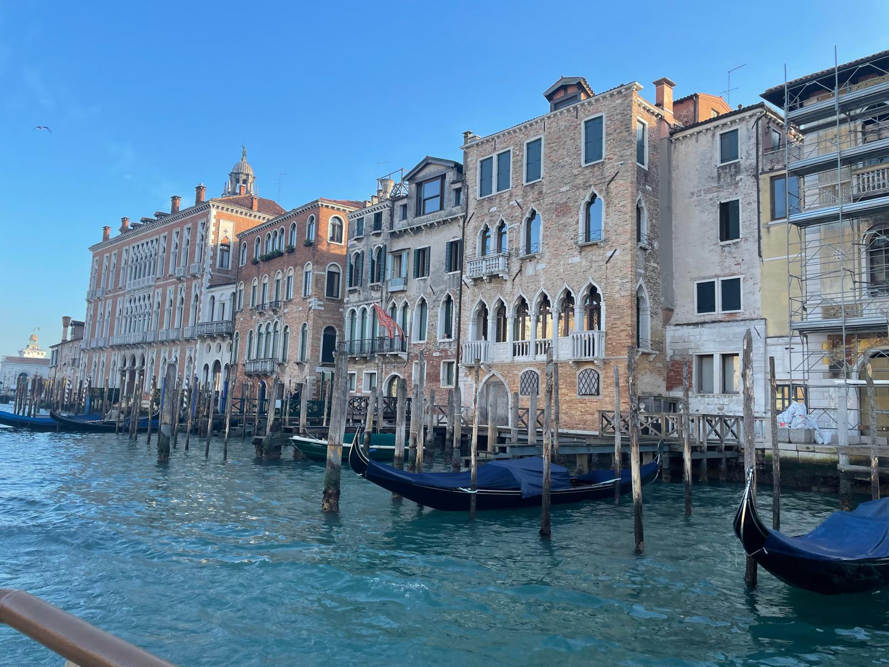
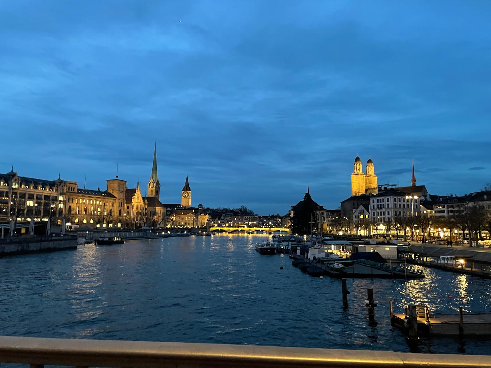
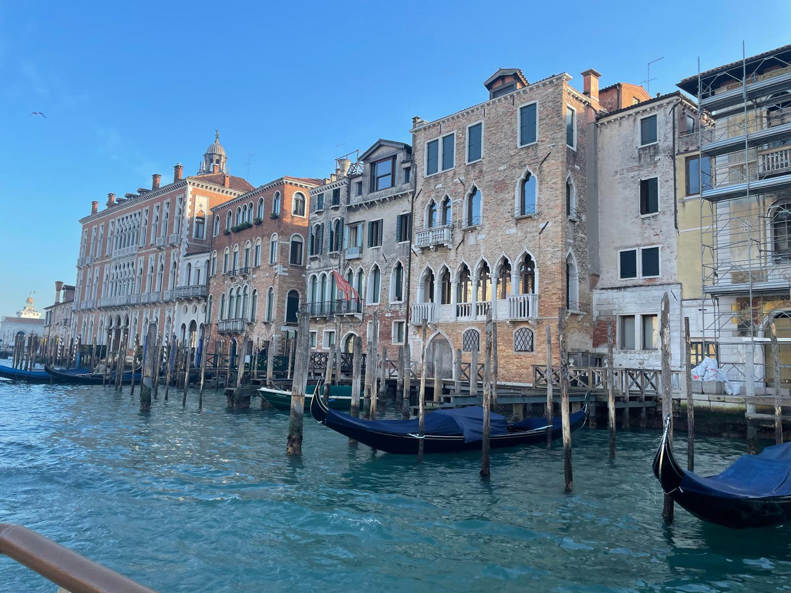
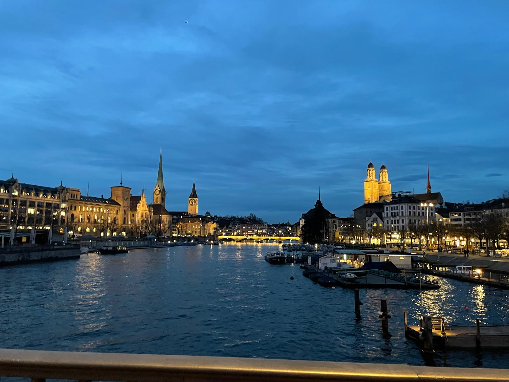

✈️Globe-trotting
My favorite hobby
 



Traveling as a hobby offers a unique blend of adventure, learning, and personal growth. It allows individuals to explore new cultures, experience different cuisines, and meet people from diverse backgrounds. Whether it's discovering hidden gems in a bustling city or finding peace in nature's beauty, travel provides endless opportunities for memorable experiences. It broadens perspectives, encourages curiosity, and helps create lasting memories, making it a fulfilling and enriching way to spend leisure time.
Discover more on